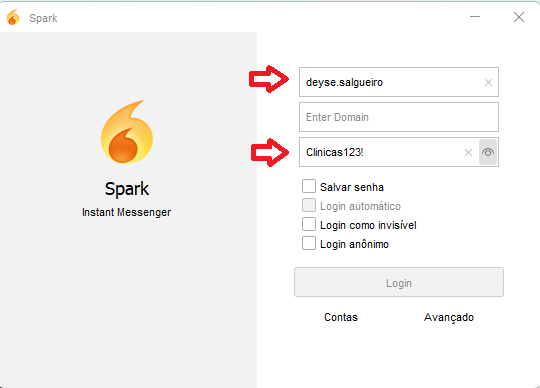
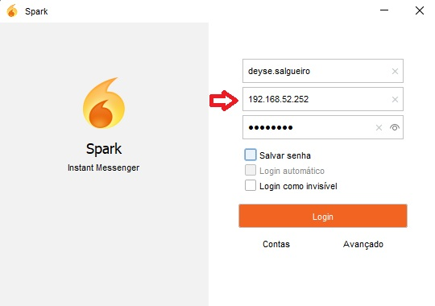
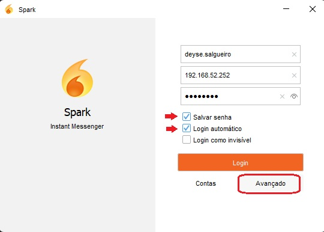
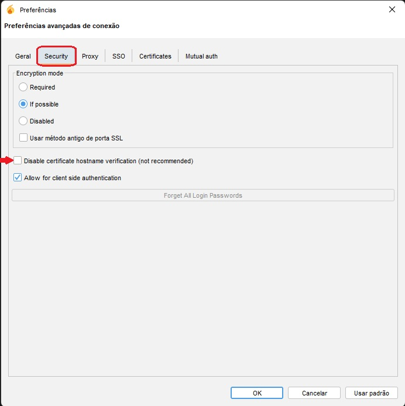
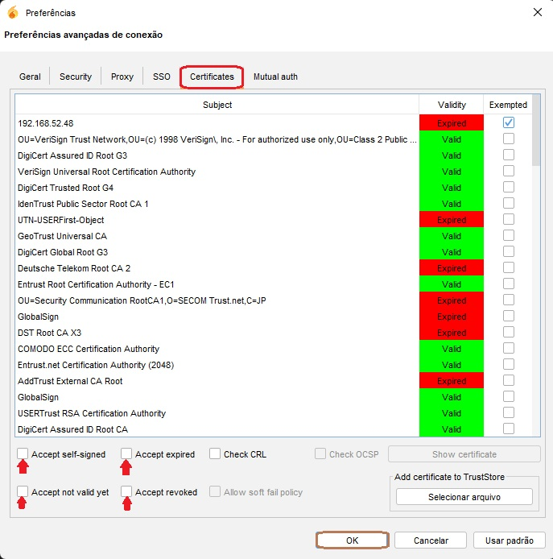
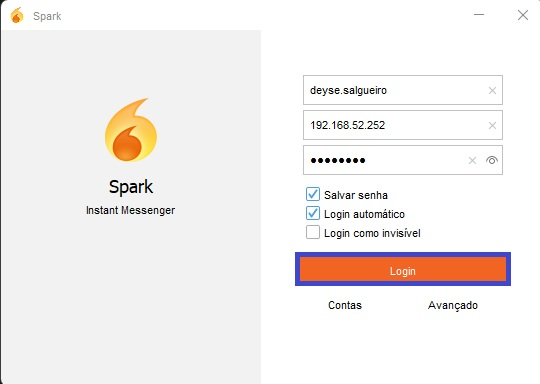

Configuração do Spark
1. Confira se os seus logins estão corretos conforme o padrão enviado a você e a imagem logo abaixo:

2. Confira se o IP foi digitado corretamente (com os sinais de ponto entre os números).

3. Com as credenciais digitadas corretamente, agora selecione as opções "Salvar senha", "Login automático"
e em seguida clique em "Avançado".

4. Logo após, selecione o menu "Security", marque a opção descrita e apontada na imagem abaixo.
- Disable certificate hostname verification (not recommended)

5. No menu "Certificates", selecione as opções conforme a descrição abaixo e clique no botão "OK".
- Accept self-signed
- Accept expired
- Accept not valid yet
- Accept revoked

6. Ao concluir todos os passos, realize seu login no Spark.
